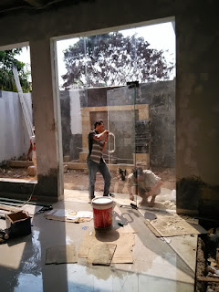
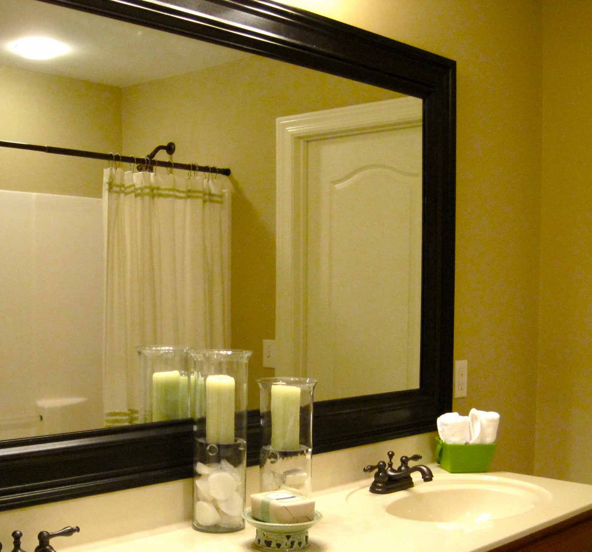

Kaca merupakan keperluan yang krusial bagi sebuah industry maupun gedung. Melainkan kini, penerapan kaca semakin meluas. Kaca juga berfungsi sebagai daerah keluar masuknya sinar sang surya pada sebuah bangunan. Maka dari itu, benda ini cukup penting digunakan pada sebuah bangunana.
Kini sudah hadir bermacam maca jenis kaca yang bisa ditemui, tiap-tiap kaca mempunyai fungsinya masing-masing. Bisa untuk system keamanan, keindahan dan masih banyak yang bisa di dapatkan dari pemasangan kaca. Macam kaca-kaca hal yang demikian diantaranya yaitu kaca tempered, kanopi kaca, kaca frameless, kaca cermin, railing kaca dan masih banyak variasi kaca lainnya yang dapat anda dapatakan dan anda aplikasikan pada bangunan. Tiap-tiap kaca mempunyai fungsi masing-masing yang membuat banyak orang kian mebutuhkannya dari hari ke hari. Berikut ini sedikit penjelasan mengenai pelbagai jenis kaca dan fungsi kaca dan juga parket lantai kayu jati yang dapat anda peroleh.
Jasa Pemasangan Kubikel Toilet di Cirebon

Dahulu, kamar mandi hanya disekat oleh penyekat yang berbahan kayu, jarang sekali yang menerapkan bahan lain. Kubikel kamar mandi adalah kaca pembatas yang dipakai pada kamar kecil.
Anda juga dapat membuat toilet di space yang lebih kecil dan tak membutuhkan lahan yang seperti itu besar untuk membikin WC yang banyak. Jika anda sedang membutuhkan kubikel WC Cirebon, anda bisa lantas mengunjungi web dis.or.id. Sekiranya anda tertarik untuk mempunyai kubikel WC Cirebon, anda dapat segera mengunjungi dis.or.id.
Profit dari sekat kaca memberikan yakni bisa memberikan efek luas sebab ruangan tersekat namun secara visual tak.
Namun pemakaian kaca di kamar mandi bisa jadi dilema dikala Anda meletakkannya dengan salah. Sekiranya anda saat ini sedang memerlukan kaca shower untuk kamar mandi, langsung saja kunjungi dis.or.id untuk melakukakn pemesanan ataupun menanyakan detil harga dari kaca shower.
Distributor & Supplier Kaca Shower
Kecuali hal yang demikian kini bisa anda lakukan dengna memakai kaca shower untuk kamar mandi anda. Kaca shower ini dapat menjadi dan mempunyai skor estetika tersendiri karena dengan memasangnya tentu kamar mandi anda akan kelihatan lebih cantik dan mewah layknya kamar mani hotel. Shower screen ialah kotak atau alat yang berfungsi sebagai penyekat ruang khusus untuk kamar mandi. Penyekat ini akan memisahkan antara tempat berair yang dipakai untuk mandi atau meletakan shower dan daerah lain yang ialah zona kering. Apalagi kini sudah ada toko penjual shower screen yang memasarkan produknya dalam sistem satu paket termasuk pemasangannnya.
Tak anda memerlukan kaca shower anda dapat mengunjungi segera dis.or.id. Disana tersedi kaca shower dengan berbagai ukuran dan juga harga yang juga cukup terjangkau. Anda bisa buktikan sendiri.
Distributor, Supplier & Jasa Pasang Kanopi Kaca
Sekiranya akan memberikan kesan lapang saat berada di kamar mandi, mandi dengan shower akan memberikan kesejukan tersendiri dibanding kamar mandi dengan bak mandi. Harga dari tiap-tiap kaca yang ditawarkan cukup beragam tergantung kaca yang nanti akan dipakai. Progres ini memang desain shower berbahan kaca memang lebih banyak diterapkan daripada desain shower berbahan tirai. Disinilah letak perbedaan optis yang utama antara akrilik (acrylic) dengan kaca. Apabila tembus pandang, kaca mengabsorpsi cahaya yang masuk sehingga semakin tebal kaca maka kian sedikit cahaya yang bisa melewatinya, maka sifat transparannya makin berkurang.|Di samping pintu kaca shower akan membikin kamar mandi kecil tampak lebih besar. Pada atap akrilik, penyerapan cahaya yang terjadi demikian kecil sehingga walaupun ketebalannya bertambah, sifat transparannya tidak banyak berubah. Atap akrilik atau dapat juga disebut atap kaca acrylic ini banyak ditemukan di sebuah bangunan rumah, seperti ruko, apartemen, resto, mall, hingga bangunan gedung.
Seiring dengan perkembangan dunia properti, sekarang kanopi kaca tempered sudah berkembang kencang meniru arsitektur modern. Terdapat banyak kanopi dengan beraneka ukuran dan ketebalan yang bisa anda pilih layak dengan yang anda butuhkan. Dis.or.id juga menyediakan jasa pemasangan kanopi kaca yang tentunya dengan bantuan energi professional yang telah berpengalaman. Jika fungsi utama kanopi sebagai pelindung untuk bangunan hal yang demikian, pemasangan kanopi kaca juga dapat membuat bangunan menjadi kelihatan lebih indah dan menarik, apalagi mengaplikasikan konsep yang sama dengan konsep rumah minimalis. Sesudah kaca untuk atap kanopi cukup digemari. Tak anda sedang mencari kanopi kaca, anda dapat langsung mengunjungi dis.or.id.
Jasa Maintenance Kaca
Maintenance pada kaca amat dibutuhkan supaya gedung pencakar langit milik Anda nampak baik dan bersih. Telah beberapa tahun, kaca gedung menjadi kusam karena terik sinar sang surya, debu, hujan, atau kotoran lainnya. Jasa maintenance kaca juga menawarkan pelayanan koreksi. Tidak ada kaca yang rusak atau pecah, kapabel untuk melakukan pembenaran cakap membersihkan beragam ragam kaca dengan ukuran, betuk, serta warna yang sesuai dengan yang Anda butuhkan. Salah satunya pelayanan berupa pembersihan gedung yang terbuat dari kaca. Kaca menjadi kusam. Kecuali hanya membersihkan kaca, jasa maintenance kaca juga bisa mengerjakan pembenaran.
Tak anda tertarik, anda dapat lantas mengunjungi web dis.or.id untuk melihat kabar lebih lanjut mengenai jasa maintenance kaca yang di tawarkan. Disana anda dapat memanfaatkan jasa maintenance kaca dengan tenaga ahli yang kapabel membersihkan gedung kaca dengan produk pembersih kaca apa yang terbaik untuk menghilangkan kotoran dan kusam. Dis.or.id juga telah mempersiapkan dengan berbagai alat yang bisa dipakai untuk menjangkau semua sudut gedung, sekalipun gedung Anda amat tinggi. Dengan sudah memberikan training kepada daya spesialis sehingga mereka sudah bisa melaksanakan pekerjaan mereka dengan amat bagus.
Jasa Pemasangan Kaca Tempered
Tak yang telah di kenal bahwa jasa pemasangan kaca tempered hanya dijalankan oleh orang yang profesional. Disana anda dapat memanfaatkan jasa maintenance kaca dengan daya spesialis yang mampu membersihkan gedung kaca dengan produk pembersih kaca apa yang terbaik untuk menghilangkan kotoran dan kusam. Untuk bagian perkantoran, pintu, partisi, serta balkon biasanya terbuat dari kaca tempered. Sementara itu, untuk rumah hunian, bagian dari rumah seperti kamar mandi serta kanopi biasanya terbuat dari kaca tempered. Banyak bagian properti yang bisa dihasilkan dengan bahan berupa kaca tempered. Untuk gedung perkantoran, komponen yang paling tak jarang dihasilkan dengan bahan yang satu ini ialah jendela dan pintu. Tetapi dahulu cuma gedung perkantoran atau sentra perbelanjaan modern saja yang menerapkan tipe kaca ini, kini rumah hunian juga sudah dibangun dengan kaca tempered.
Dengan mangunjungi dis.or.id, anda dapat menerima dan memanfaatkan jasa kaca tempered yang pantas dengan kemauan anda. Sekarang dari kaca tempered dapat mengurangi bahaya cedera ketika kaca pecah karena ketika terjadi sesuatu seperti kaca pecah karenanya kaca tempered akan terurai menjadi butiran kecil yang relatif lebih aman dari potongan pecahan kaca umum. Disana anda bisa memanfaatkan jasa pemasangan kaca tempered untuk segala jenis bidang ataupun bangunan. Tak dikala ini anda sedang ingin membangun suatu bangunan atau gedung, anda bisa memanfaatkan kaca tempered untuk diaplikasikan segera ke segala variasi bidang.
Distributor & Supplier Pintu Kaca

Pintu kaca yakni hal yang cukup penting dimiliki oleh sebuah bangunan. Ada banyak desain pintu kaca yang bisa kita temui seperti pintu kaca berbentuk sliding (geser) atau folding (lipat). Tidak Anda mau mempunyai pintu kaca lipat yang terdiri dari beberapa bingkai. Tersedia beberapa macam kaca dengan kwalitas yang terbaik, mulai dari kaca tempered hingga yang non-tempered. Dalam hal ini, terdapat sebagian variasi kaca dengan kualitas yang terbaik. Sekarang paling banyak diminati ketika ini merupakan kaca tempered sebab jauh lebih kuat dan tahan lama.
Perhatikan Ukuran serta ketebalan menyesuikan dengan kemauan Anda.
Kaca yang di gunakan adalah kaca dengan kwalitas terbaik. Anda bisa memilih kaca tempered yang sekarang ini sedang naik daun.
Jual Kaca Cermin

Kaca cermin tak cuma berfungsi untuk berkaca saja melainkan juga sebagai pemanis ruangan. Lihat saja banyak produk cermin yang diciptakan dengan desain unik dan menarik. Sekarang, cermin tidak hanya berbentuk persegi saja. Ada beberapa keunggulannya. Ada cermin persegi yang dilekatkan beraturan, cermin berbentuk seperti daun, dan lain sebagainya. Pun, ada juga desain kaca cermin yang unik. Jadi, Anda dapat sesuaikan desainnya dengan desain ruangan yang akan Anda pilih untuk menempatkan cermin hal yang demikian. Sementara itu, dikala dipandang dari luar, kaca ini reflektif. Sekiranya itu, sekali-sekali cerminnya tak ada piguranya atau yang kerap disebut dengan kaca cermin frameless.
Dan bahan yang diaplikasikan untuk membikin bingkai malahan berbeda-beda. Dengan jenis kaca ini, orang yang berada di luar ruangan tak dapat memandang apa yang ada di dalam ruangan. Tidak contoh lemari pakaian di mana komponen pintunya terbuat dari kaca cermin. Cermin ini umumnya ditempatkan di kamar mandi, di atas wastafel, atau di kamar tidur. Jadi, orang di luar tidak dapat mengamati Anda berada di dalam. Harga yang relatif murah dan mutu terbaik merupakan ciri khas dari dis.or.id.
Jasa Pemasangan Railing Kaca

Railing kaca menjadi salah satu bagian yang akan membuat tampak benar-benar minimalis. Malah juga bahan yang diaplikasikan.
Anda bisa memilih kaca dengan kualitas terbaik. Jikalau menyokong keamanan, railing kaca ini juga akan mempercantik desain interior rumah Anda. Dengan demikian, pecahan tak akan melukai siapapun. Pecahannya amat kecil dan lembut sehingga tidak akan melukai siapapun yang terkena pecahan. Sekarang pasti, railing kaca ini menjadi alternatif yang tepat. Seandainya memberikan kesan minimalis pada interior rumah, ini juga membuat rumah Anda menonjol lebih nyaman untuk diwujudkan daerah tinggal.
Harga yang sungguh-sungguh ekonomis serta kwalitas terbaik yang sudah terjamin membikin anda tak akan menyesal membeli railing kaca di dis.or.id. Tentu dengan harga yang murah melainkan konsisten berkelas.
Distributor & Supplier Pintu Lipat Kaca

Ketika ini, alternatif macam kaca beragam dan bervariasi. Lalu, berapakah harganya? Anda mungkin menduga bahwasannya kaca ini ditawarkan dengan harga selangit. Memang dibandingi dengan variasi kaca lainnya, harganya lebih mahal. Akan melainkan, terpautnya tak terlalu signifikan.
Tak cuma itu, pintu lipat kaca bisa Anda pasang di kamar lantai atas yang ada balkon. Dengan demikian, cahaya sang surya di siang hari bisa masuk ke dalam ruangan. Dan dengan adanya pintu kaca ini, keamanan semakin baik. Dan yang pasti, ruangan menjadi lebih modern, minimalis, dan nyaman untuk ditempati.
Distributor & Supplier Partisi Kaca
Partisi ini sekarang tidak lagi diterapkan di perkantoran, hotel, atau pusat perbelanjaan saja. Anda dapat bandingkan sendiri berapa yang Anda wajib siapkan untuk membuat partisi tembok. Anda beli batu bata, pasir, dan semen. Belum lagi tarif pemasangan yang tidak murah. Dalam hal ini, Anda wajib tahu kaca apa yang bagus untuk partisi. Kecuali itu, tentukan juga desainnya apakah partisi kaca frameless (tanpa bingkai) atau dengan frame. itu, pertimbangkan juga privacy. Ini yang akan Anda hal yang apakah Anda menerapkan kaca transparan, semi transparan, atau kaca cermin. Belum lagi biaya untuk tukang yang lebih banyak ketimbang tarif pembelian bahan bangunan. Atas pertimbangan efisiensi, maka banyak orang yang beralih ke partisi kaca. , banyak rumah hunian yang menggunakan partisi kaca. Dengan harga yang benar-benar cocok dengan kantong anda, Lantas daripartisi kaca ini perlu diragukan lagi. kunjungi dis.or.id sekarang juga. Akan , Anda selektif dalam hal memilih kaca untuk partisi. Dis.or.id bermacam jenis kaca penyekat yang kualitasnya terbaik.